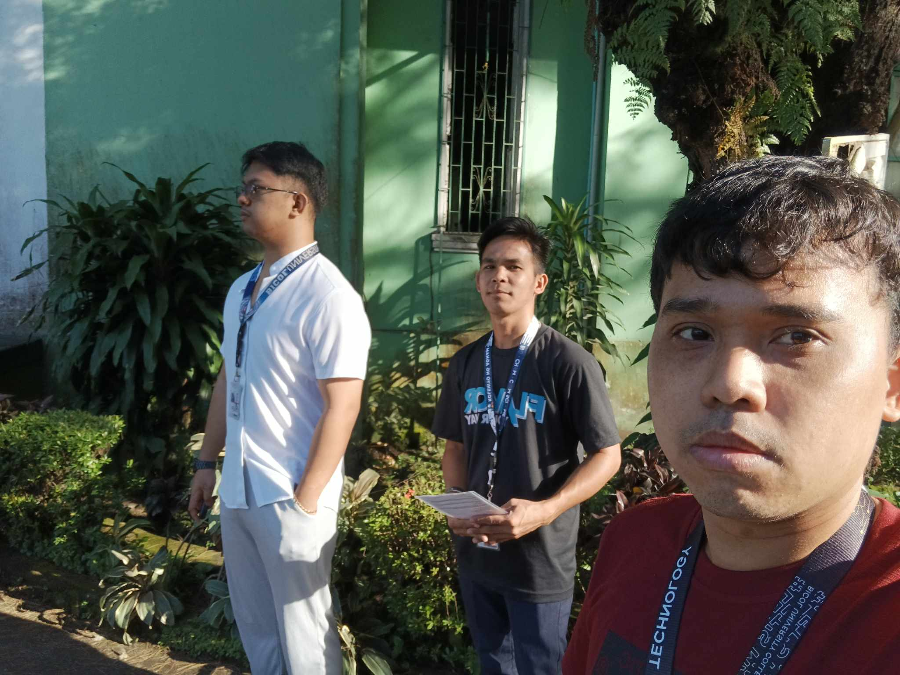
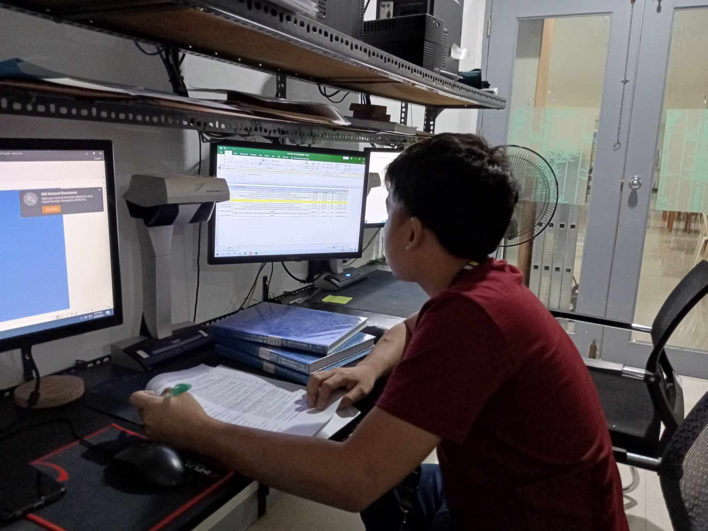
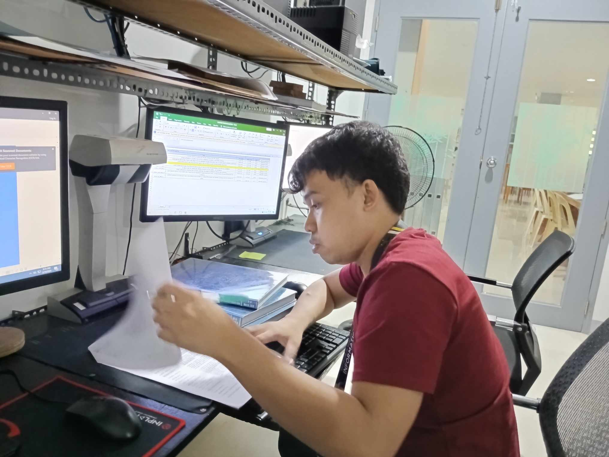
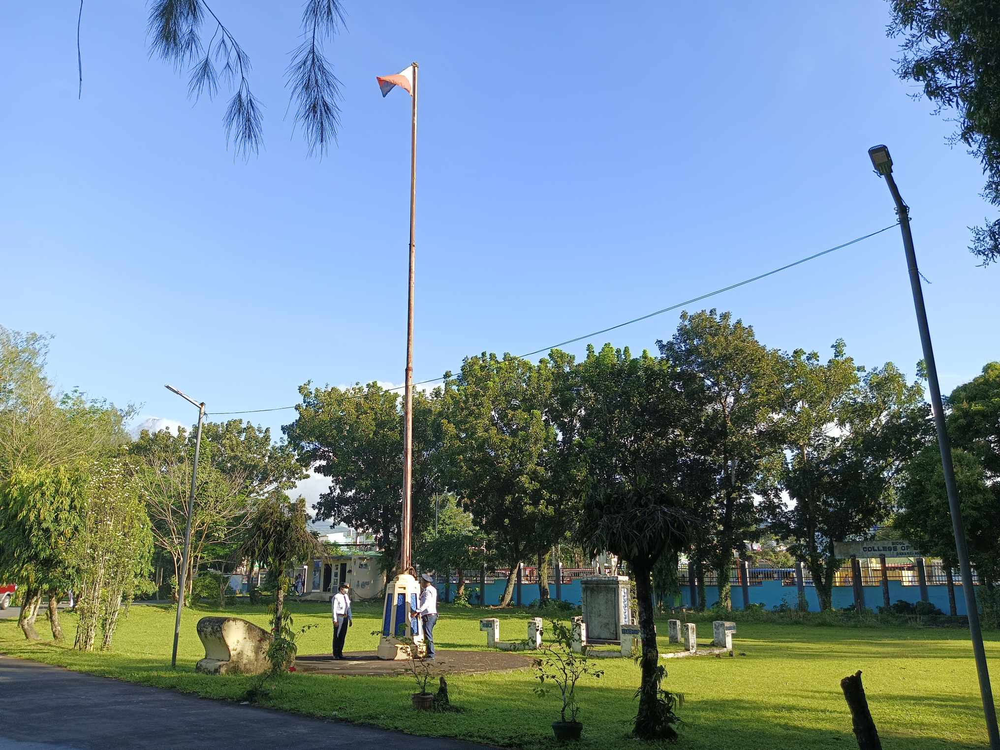
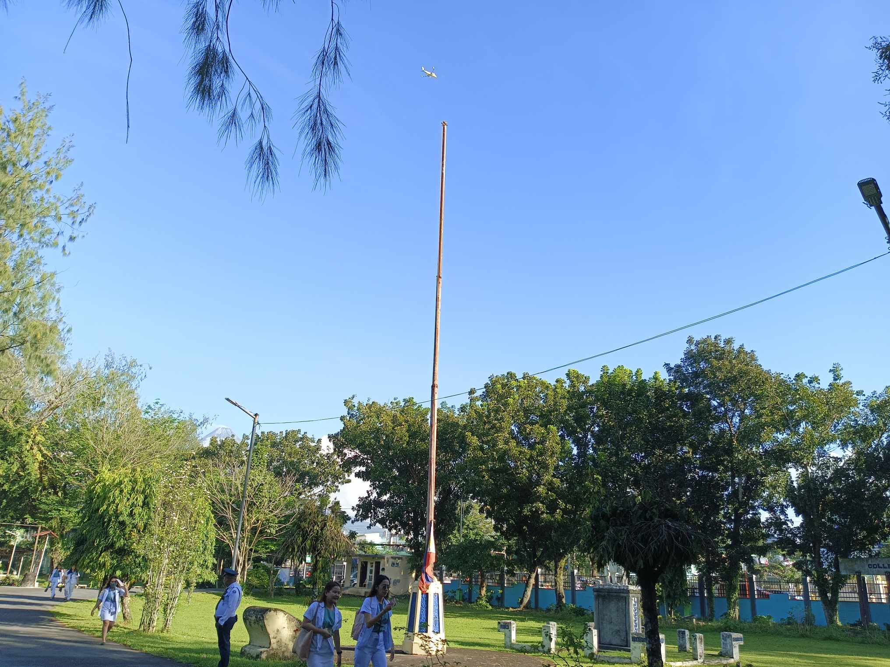
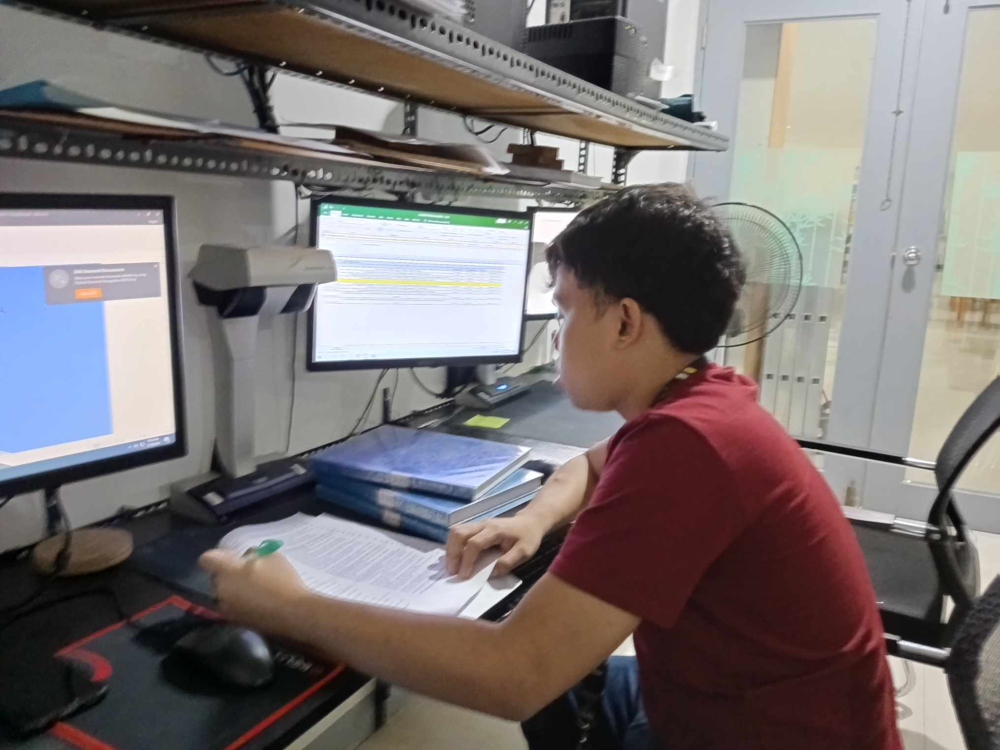

OJT Daily Entry for the Month of February






On this day February 19, And it is Monday, today we have been advise to attend flag ceremony for the first time in our OJT period, and after that we continue doing our designated task
HERE ARE SOME TASK I MADE:- I recheck again the old scanned thesis and ready to put it back on the library shelf
- I scanned new thesis which given to ask